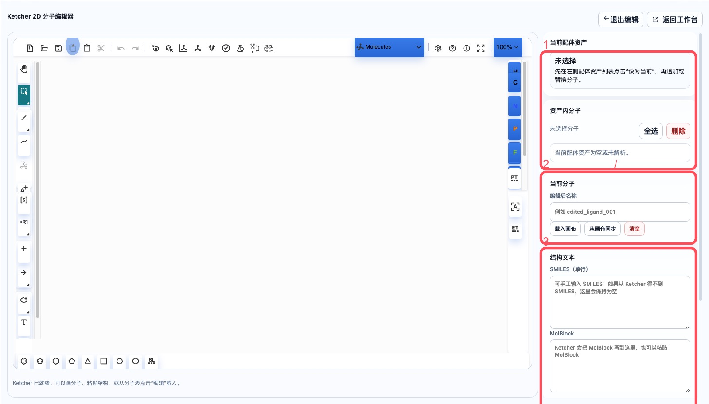
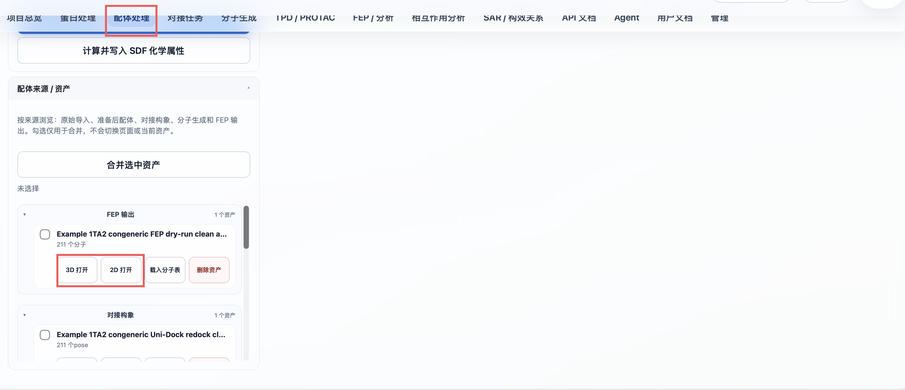
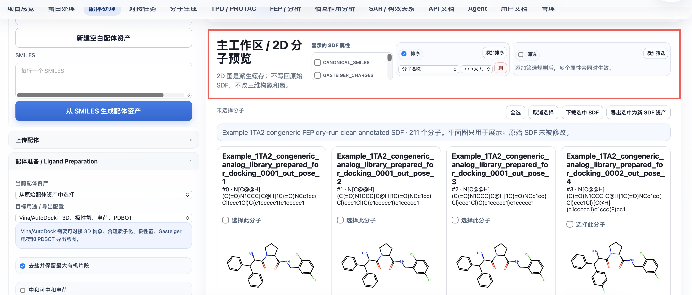
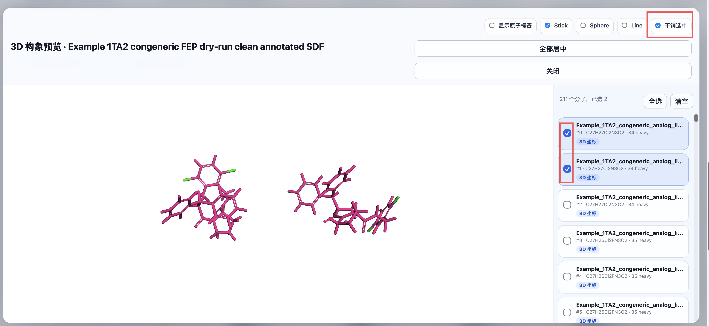
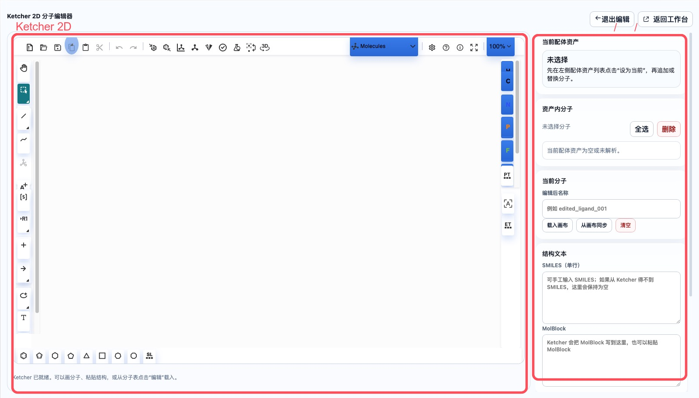

Ligand Preparation Guide
This guide continues with the fixed project tutorial-1A2C-thrombin. The goal is to extract ligands from the 1A2C co-crystal structure, merge them into a ligand library, run ligand preparation, and produce reusable ligand assets for Uni-Dock docking, SAR, molecule generation, and downstream FEP workflows.
What this module does
- Creates ligand assets from SMILES, SDF, MOL/MOL2/PDB uploads, or an empty library.
- Displays molecules inside a ligand asset and supports single/multi-molecule selection, copy, delete, and edit actions.
- Uses Ketcher 2D for drawing new molecules or modifying existing molecules.
- Appends molecules to the current ligand asset, replaces the current molecule index, or saves a new ligand asset.
- Runs
wa-dd-ligand-prep-workerto generateprepared_ligandassets. - Prepares compatible ligand inputs for Uni-Dock/Vina, FEP/MD, and other downstream workflows.
1. Extract a ligand library from the 1A2C co-crystal structure
From the protein component list or focused 3D editor, extract co-crystal ligand components into a ligand asset. For 1A2C, use:
34H J:1
PRJ J:3
OAR J:4
TYS I:363 (optional, for recording the hirudin-related modified fragment)
Recommended ligand asset name:
1A2C co-crystal ligand library
The output is a ligand asset that can be extended, edited, prepared, or copied to another project.
2. Select the current ligand asset
Open Ligand Preparation. In the left-side ligand asset list, select:
1A2C co-crystal ligand library
The right workspace shows the current ligand asset, molecules inside the asset, the current molecule editor, and structure text. Always confirm the current ligand asset before appending or replacing molecules.

Asset sources are grouped as raw ligands, prepared ligands, docking poses, molecule-generation output, and FEP output. Each SDF asset can be opened directly in 3D or 2D; selected assets can be merged into one new SDF asset.

The 2D workspace can choose displayed SDF properties, sort or filter by them, download selected records, and export them as a new SDF asset. Display and filtering do not modify the stored SDF.

3. Edit an existing molecule
Choose a molecule in the Molecules in asset list, such as PRJ J:3 or OAR J:4.
Common actions:
Use for docking: set this molecule as the current docking ligand.Edit: load the molecule into Ketcher.Copy: append an identical molecule to the same ligand asset and load the copy into Ketcher.- Select one or more molecules and click
Delete: remove unnecessary molecules in batch.
Copy-before-edit is the recommended workflow because it preserves the original co-crystal molecule.
3D conformer preview
Select Open 3D on an asset card to inspect conformers in its SDF. The right-side list supports selecting several molecules for simultaneous display; Tile selected separates those conformers for comparison without changing stored coordinates or hydrogens.

4. Draw or modify molecules with Ketcher
Open the 2D Edit tab or the focused editor. Ketcher tools are on the left and bottom; the canvas is in the center; structure text and save actions are on the right.
Save strategies:
Append to current ligand asset: append the current drawing as a new molecule. After success, the canvas should clear so the next molecule can be drawn immediately.Replace current molecule position: overwrite the selected molecule index with the current drawing.Save as new ligand asset: create a new ligand asset without changing the original library.
If Ketcher cannot provide SMILES directly, the system keeps the MolBlock and lets RDKit/Open Babel parse and standardize it on the backend.

5. Run ligand preparation
In Ligand Preparation, select:
1A2C co-crystal ligand library
In Target use / export profile, choose the downstream route:
Uni-Dock/Vina: enable 3D conformers, explicit hydrogens, Gasteiger charges, torsion preparation, and PDBQT compatibility output.FEP/MD: enable 3D conformers and explicit hydrogens, and keep force-field handoff metadata.
Recommended output name:
1A2C co-crystal ligands prepared
Click Generate prepared ligand asset. Production deployments use wa-dd-ligand-prep-worker, a CPU worker that does not require GPU or PyTorch. It bundles RDKit, Open Babel, Meeko, Dimorphite-DL, and gemmi.
The preparation workflow covers:
- Salt stripping.
- Target-specific neutralization, hydrogen handling, and charge assignment.
- Target-specific 3D conformer generation.
- MMFF/UFF optimization.
- Tautomer recording.
- Stereoisomer recording.
- Vina/AutoDock mode additionally attempts PDBQT export; if the underlying tool fails, the SDF is kept and the reason is recorded in metadata.
The output is a prepared_ligand asset:
1A2C co-crystal ligands prepared
6. Use in docking tasks
Prepared prepared_ligand assets can be used directly on the Docking Tasks page. On the "Docking Tasks" page:
- Protein asset: select the corresponding
prepared_protein - Ligand asset: select the newly generated
prepared_ligandorprepared_ligand_library - Pocket asset: select the corresponding
pocket - Docking method: default Uni-Dock GPU
Click "Submit docking job" to start the docking calculation.

7. API automation chaining
Key ligand APIs:
POST /api/v1/assets/ligands/empty
POST /api/v1/assets/ligands/smiles
POST /api/v1/assets/upload
POST /api/v1/assets/ligands/{asset_id}/molecules
PUT /api/v1/assets/ligands/{asset_id}/molecules/{index}
POST /api/v1/assets/ligands/merge
POST /api/v1/preparations/ligand
POST /api/v1/jobs
Automation chain:
ligand asset_id
-> prepared_ligand asset_id
-> prepared_protein asset_id + pocket asset_id
-> docking job_id
-> downstream result assets
8. Server6 Example: congeneric library, FEP output, and 2D/3D inspection
This example runs in the Example project on server6. The ligand preparation page is used to inspect the original congeneric library, the prepared library, the docking pose library, the molecule-generation library, and the FEP output SDF.


Steps:
- Open "Ligand Preparation".
- On the left, expand "Ligand source / assets" by source:
Raw import / editPrepared ligandDocking conformationsMolecule generationFEP / MD output- Select
Example 1TA2 ligand 176 congeneric 72 analog libraryand click "Generate prepared ligand asset". - Recommended preparation parameters: explicit hydrogens, generate 3D conformers, pH 7.4, MMFF/UFF optimization, compute chemical properties.
- After preparation, you get
Example 1TA2 congeneric 72 analog library prepared for docking. - After docking and FEP finish, return to the ligand preparation page to open:
docking_pose_library: inspect the 3D conformer and docking score of each docking pose.fep_output: inspect the derived SDF with FEP fields.

How to use 2D/3D results:
Open 2D: page through 2D structures; properties come from SDF properties and can be used for sorting, filtering, downloading selected SDF, or exporting a new asset.Open 3D: inspect conformers inside an SDF. The right-side list supports single/multi-select, useful for comparing whether conformers land in a reasonable pocket position.Load molecule table: load each SDF record into the main workspace, making it easy to select and edit by property.
Result interpretation:
- Docking scores come from SDF properties such as
WA_DD_DOCKING_SCORE. - The
fep_outputfrom a FEP dry-run keeps the structure and annotates planned edge information; real ΔΔG requires a full production FEP job. - The
heavy / Hshown on the page lets you quickly confirm whether explicit hydrogens are present. Withprepare_for_dockingenabled in molecule generation, the assets in this example already carry hydrogens.